아프가니스탄 주둔 미군은 에비앙 생수를 마셨나?
게시: 2021-08-26T06:30:30+09:00
저는 이번 아프가니스탄에서 탈레반이 결국 미군을 몰아내고 카불을 함락시킨 사건을 보면서 가장 궁금했던 것이 탈레반의 보급에 대한 것이었습니다. 몇 명이 폭탄 테러하는 수준을 벗어나 지역을 장악하고 도시를 점령하는 군대 수준이 되면 가장 중요한 것이 병참이라고 생각하거든요. WW2 이후 미군이 지지는 않았더라도 무척 고전했던 모든 전쟁, 그러니까 한국전이나 베트남전, 그리고 이번 아프간전 모두 미군이 적의 보급망을 끊지 못했다는 공통점이 있습니다. 한국과 베트남 모두 소련과 중국이 꾸준히 무기와 식량 등의 보급품을 계속 전장에 투입했고, 미군은 그런 보급로를 끊으려 막대한 항공 전력을 투입했지만 결국 실패했습니다.
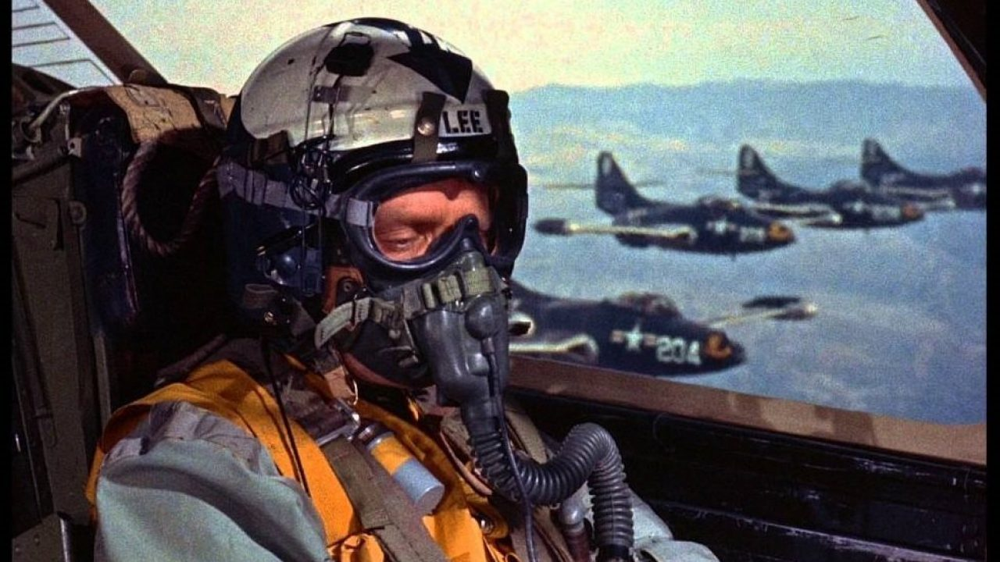
(윌리엄 홀덴과 그레이스 켈리 주연의 1954년 영화 The Bridges at Toko-Ri 입니다. 한국전을 배경으로 한 이 영화에서 윌리엄 홀덴은 동해상의 미해군 항모에서 출격하여 계곡에 놓인 다리를 끊으려는 Grumman F9F-2 Panther 함재기의 조종사로 나옵니다. 당시 미해군 제트기들은 함재기 특성상 저속 안정성이 중요하여 후퇴익이 아니었기 때문에 속력이 느렸고, MiG-15에 대적하기는 좀 버거웠다고 합니다. 그래서 공중전은 주로 미공군의 F-86 Sabre가 맡았고, 미해군기들은 북한 후방의 철도, 다리, 도로 등의 보급로 파괴에 집중했습니다. 폭격 활동은 매우 활발했지만, 공산군은 야간에 오솔길 등을 통해 결국 꾸준히 보급 활동을 수행했고 결국 미해군의 자체 평가로도 보급로 차단은 실패했습니다. 영화 속 윌리엄 홀덴도 격추되어 결국 어느 논두렁에서 북한군인지 중공군인지 적의 총에 맞아 죽습니다.)
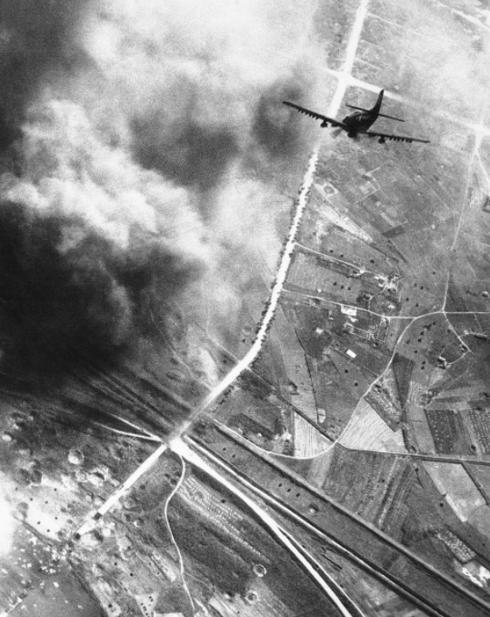
(이건 한국 전쟁 중 북한의 도로망을 폭격하기 위해 급강하 중인 미해군 AD-1 Skyrader의 모습입니다. 사진 왼쪽 아래 부분에 이미 많은 폭탄 구멍이 벌집처럼 뚫려있는 것이 보입니다.)
생각해보면 탈레반과 비슷한 성향의 IS도 불과 몇년 전까지 기세 등등했으나 결국 완전히 패망하고 말았습니다. 왜 IS는 패망했고 탈레반은 성공했는가에 대해서는 여러가지 분석이 있겠지만, 탈레반은 주변에 파키스탄, 러시아, 이란 등 도와주는 국가들이 많았고 IS는 반대로 러시아, 이란, 터키 등 주변국들이 모두 IS에 대해 적대적이었기 때문에 망했다고 보는 것이 맞을 것 같습니다. 달리 표현하면 탈레반은 보급로가 다양하게 많이 있었고 IS는 없었다는 것이지요.
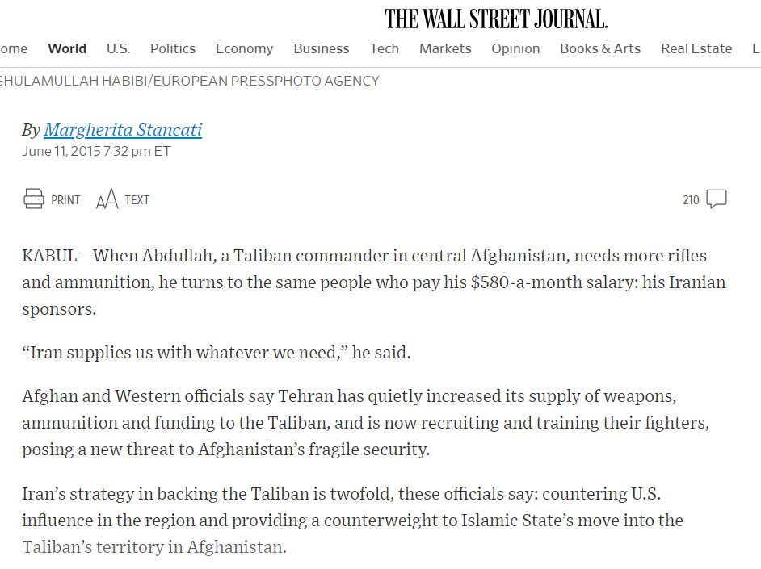
(이 기사는 시아파 이란이 수니파 탈레반에게 식량과 무기 뿐만 아니라 월급까지 주었다는, 다소 믿기 힘든 Wall Street Journal의 기사입니다. 또 다른 기사들을 보면 러시아가 탈레반에게 무기를 공급하고 있다는 기사도 있고, 또 같은 파슈툰 족이 많은 파키스탄에서 무기 식량은 물론 인력까지 대거 공급되었다는 기사도 있습니다.)
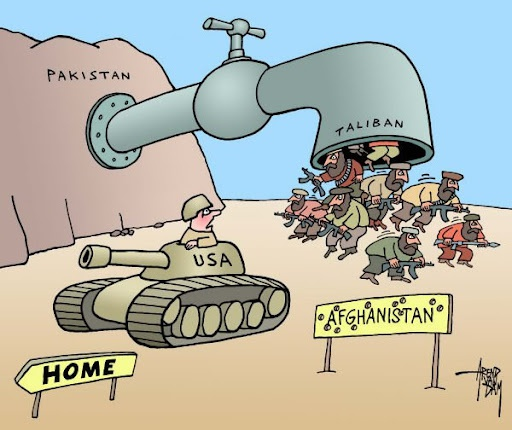
(파키스탄으로부터 탈레반 전사들이 새롭게 쏟아져 들어가는 것을 풍자한 만화입니다. 실제로 탈레반의 기원은 파키스탄 쪽이라고 하는 이야기를 어디서 읽었는데...)
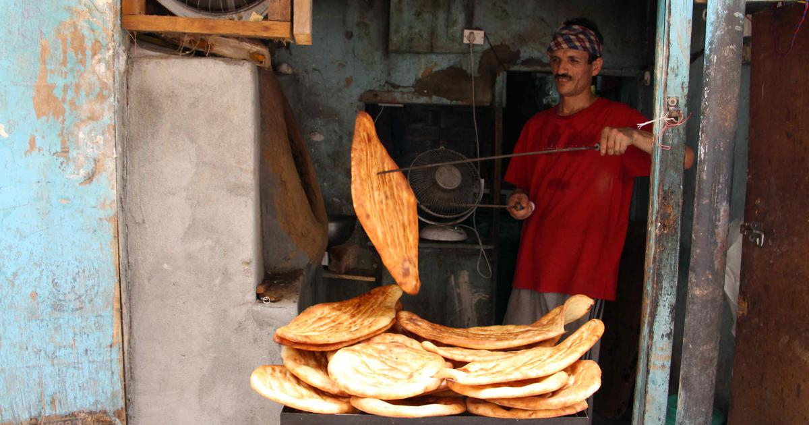
(총이 없는 군대는 존재합니다. 일제시대 청산리 전투에서의 우리 독립군도 처음에는 총과 탄약이 없었습니다. 그러나 먹을 것이 없는 군대는 존재할 수가 없습니다. 전투가 있든 없든 군대는 먹어야 하니까요. 미군과는 달리, 아무리 탈레반 전사들이 보급 없이도 잘 견딘다고 해도, 수백 명에게 매일 저런 난(naan) 빵이라도 먹이려면 그건 보통 일이 아닙니다. 황량하고 건조한 산악지대에서 화덕은 커녕 땔감 구하는 것도 생각보다 쉽지가 않거든요. 전에 TV 뉴스에서 산골짜기 바위 위에 걸터앉은 탈레반들에게 눅눅하게 축 늘어진 저런 난빵을 나눠주는 것을 봤는데, 아무 반찬 같은 것도 없이 그냥 저거 한장씩을 먹더군요.)
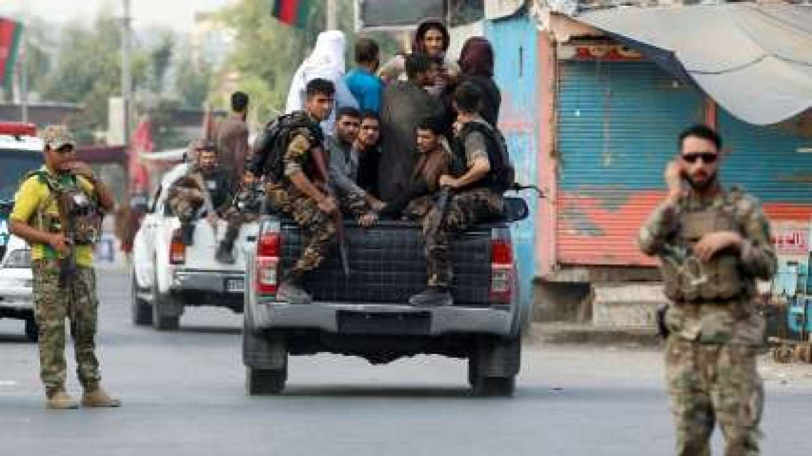
(테러리스트라고 비하되는 탈레반 전사들도 뉴스를 보니 카불에 입성할 때 도요타 픽업 트럭을 타고 들어오더군요. 2~3대라면 모를까 수백~수천대를 운용하려면 저런 트럭의 연료는 물론 점화 플러그나 브레이크 패드, 타이어 등의 부품 조달이 쉬운 것이 아닙니다.) 원레 아프간은 제국의 무덤이라고 불릴 정도로 외세의 침략에 강했는데, 이는 내륙 산악 국가라는 지정학적 특징도 큰 몫을 했을 것입니다. 위에서도 이야기했듯이 전쟁의 기본은 전투가 아니라 병참인데, 기본적으로 내륙 지역에 안정적인 보급선을 유지하는 것은 매우 어려운 일이거든요. 특히 그 지역이 산악 지대이고 주변 주민들의 정서가 원정군에 대해 비우호적이라면 보급선 유지에는 결정타입니다.
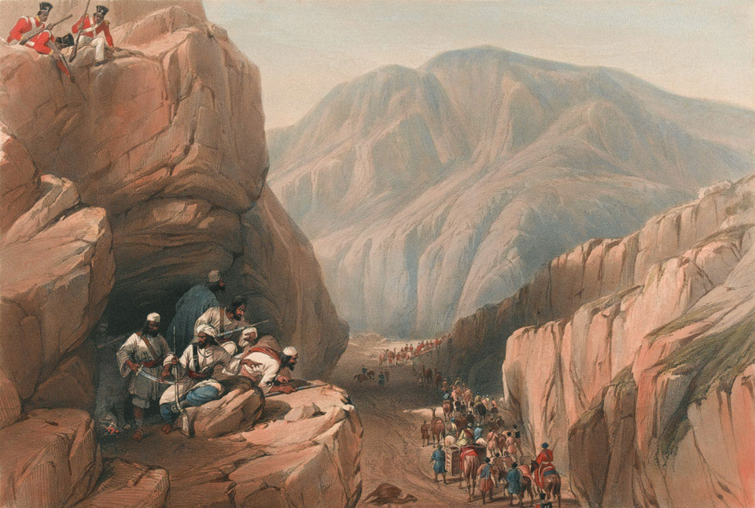
(170년의 간격만 있을 뿐, 상황은 똑같습니다. 1840년 아프간 Siri-Kajoor 협로를 통과하는 영국군을 바위 위에서 감시하는 아프간 반군, 그리고 왼쪽 위 더 높은 바위에서 반군을 노리는 세포이 용병)
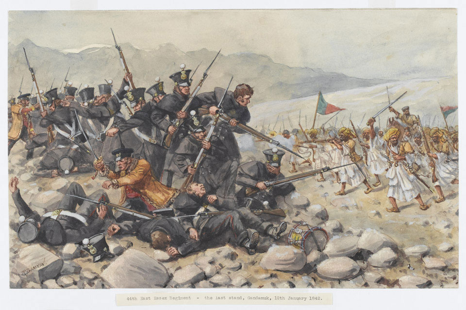
(1842년 1월 12일 간다무크(Gandamuk)에서 제44 East Essex 연대가 최후까지 저항하는 모습입니다. 군의관 W. Brydon을 포함한 몇 명만 살아남았고 전멸했습니다.) 미군이 아프간을 침공한 뒤 20년 간 탈레반과 쫓고 쫓기는 전쟁을 벌이는 중에 미군의 보급은 어땠을까요? 이 보급선 지도를 보면 애초에 아프간에 쳐들어갈 생각을 했다는 것 자체가 대단해 보입니다. 일단 모든 무기와 탄약의 보급은 항공편을 이용했습니다. 육로는 너무 불안정했기 때문이었습니다. 당연한 일이겠습니다만 육로 수송보다 항공 수송 비용이 10배 정도 더 비쌌다고 합니다.
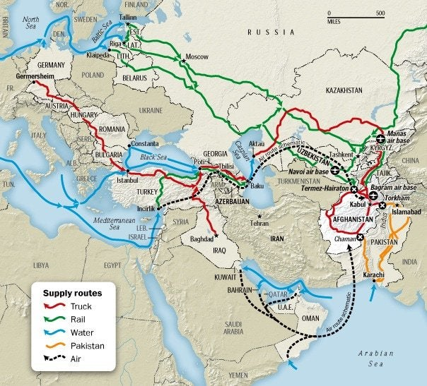
(아프가니스탄으로의 미군 보급로는 크게 인도양을 통해 파키스탄을 거치는 방법과 지중해와 흑해, 발트해 등을 거쳐 러시아와 중앙아시아를 거쳐 들어가는 방법이 있습니다. 미군 물자가 러시아 기차를 타고 수송되는 모습이라니...)
따라서 중요도가 조금 떨어지는 식량 등의 기타 보급품은 모두 육로를 이용했는데 주로 파키스탄으로부터의 트럭을 이용했습니다. 그러나 파키스탄 북부도 지형이 험하고 또 탈레반이 많이 활동하는 지역이라 미군 보급품 트럭이 습격당하는 일이 자주 발생했습니다. 또 미군의 오폭으로 파키스탄 민간인들이 사망하는 등의 문제가 발생하면 파키스탄은 그 보복으로 보급품 수송로를 차단해버렸고, 터무니없이 높은 통행세를 요구하는 등의 일도 있어서 미군의 애로 사항이 많았습니다. 이런 일이 반복되자 도저히 파키스탄에만 의존해서는 안정적인 보급선 유지가 어렵다고 보고 미군은 우즈벡과 타지키스탄, 심지어 러시아와 협력하여 중앙아시아를 통과하는 보급선을 개발했습니다. 그러나 보시다시피 그것도 너무나 멀고 오래 걸렸으며, 따라서 비쌌습니다. 또 타지키스탄 정부가 타지키스탄 내 소수 민족을 핍박하는 행위를 하여 미국 정부가 그를 비난하는 성명을 한번 냈더니 타지키스탄 정부도 자국을 경우하는 미군 보급로를 차단해버리는 등 강짜를 부리기도 했습니다. 7월초에 미군이 아프간 정부군에게도 알리지 않은 채 바그람 기지를 하루아침에 버리고 떠났지요. 이때 버려진 기지 안에는 식품류나 가재도구 등 사소한 보급품은 물론 많은 민간용 차량, 심지어 장갑차와 일부 무기 및 탄약까지 상당량이 그대로 남아 있어서 많은 사람들을 놀라게 했는데, 그런 장비 및 자재들을 버리고 간 것이 알고보면 '안 가져간 것'이 아니라 '가져갈 방법이 마땅치 않았던 것'인 모양입니다.
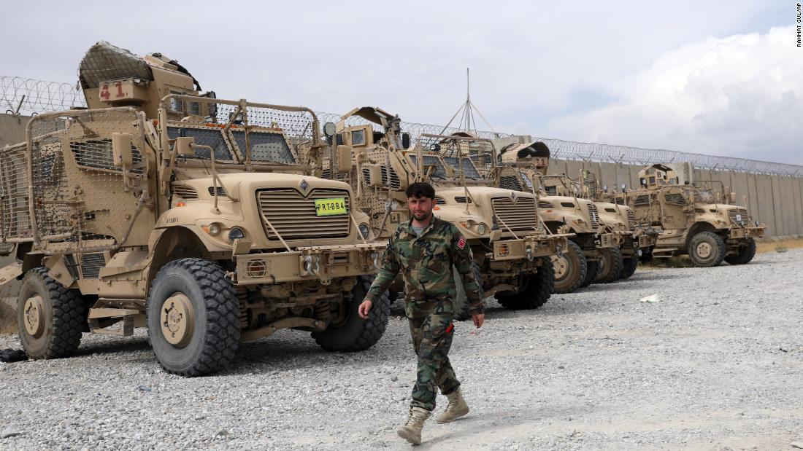
(바그람 공군 기지에 버리고 간 미군의 MRAP 장갑차들입니다.)
아프간에서 전쟁이 한창이던 2010년 8월의 기사를 보면 당시 아프간에서는 약 10만의 미군이 주둔하고 있었는데, 그 중 5천이 순수하게 보급품 수송을 맡은 수송부대였습니다. 이라크에서도 동일한 일을 수행했던 567th Cargo Transport Company의 어떤 부사관의 말에 따르면 대부분 평야지대였고 도로망이 나름 잘 갖춰져 있던 이라크에서의 수송 업무는 아프간에 비하면 정말 쉬운 셈이었다고 합니다. 원래 아프간에는 대형 수송기가 이착륙할 공항이 딱 2개 있는데 그 중 하나인 칸다하르 공항에서는 당시 24시간 내내 매 15분마다 1번씩 대형 항공기 이착륙이 있었다고 합니다. 이런 수송기들은 대부분 탄약이나 장갑차 등의 무기류를 실어 날랐고 기타 화물은 위에서 언급한 것처럼 주로 트럭을 이용했습니다. 그게 전체 보급품의 80% 정도를 차지했는데 여기에는 파키스탄과 아프간의 민간 계약자들에 의한 트럭이 하루에 6~8천대가 동원되었습니다. 2010년 초반 6개월간 미군 급양대가 공급한 식품은 총 4천7백만인 분량이었는데, 하루에 약 8만7천명을 먹인 셈입니다. 2010년 연초부터 10만이 주둔했던 것이 아니라 계속 병력이 증강되고 있었으니 하루 10만명이 아니라 8만7천을 먹인 것이지요. 그런데 그 비용은 총 9억 달러였습니다. 계산해보면 한끼당 약 19달러가 조금 더 나갑니다. 미군이 잘 먹는다지만 이건 분명히 과한 액수입니다. 실제로 제대로 된 미군 식당(DFAC, Dining Facility)에서의 한끼 식사는 대략 5~6달러 정도거든요. 이렇게 3~4배 더 비싼 식사를 하게 된 이유는 당연히 위험한 오지에로의 수송비가 많이 들기 때문이었습니다. 혹시 어떤 분은 전투식량인 MRE (Meal Ready to Eat)은 특수 처리된 패키징 비용이 비싸니까 그런 것 아니냐, 실제로 아마존 같은 곳에서 민수용 MRE 가격이 15달러 정도 한다고 하실 수도 있겠습니다. 그러나 미정부에 군납되는 MRE 1끼의 비용은 대략 7.25달러인데, 그나마 이 가격은 MRE 생산업체가 민간 시장에 공급하는 비용보다 더 높은 것이라고 합니다.
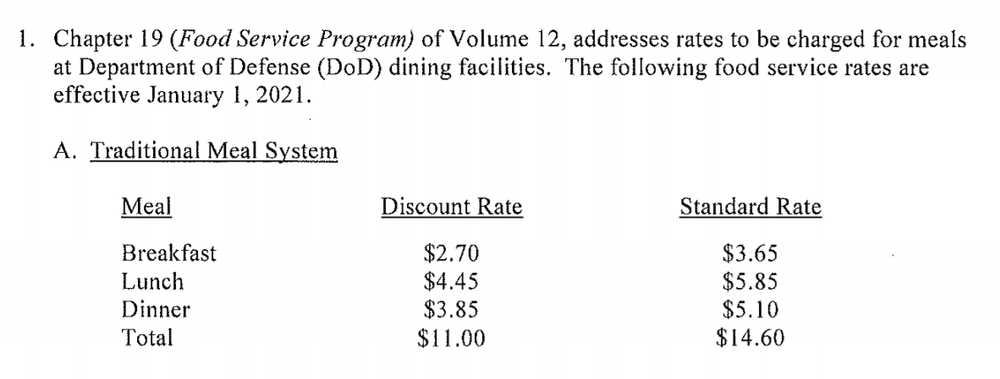
(정상적인 미군 식당의 식대입니다. 미군은 짬밥도 돈내고 먹습니다. 대신 식비를 별도로 받긴 합니다. 왜 줬다 뺐냐고요? 직업적인 모병제 군대이다보니 군인들 중에는 집에서 아침을 대충 때우고 출근하기도 하고 저녁을 퇴근해서 집에서 가족과 먹는 사람도 있는 등 각자 사정이 다양하기 때문입니다.)
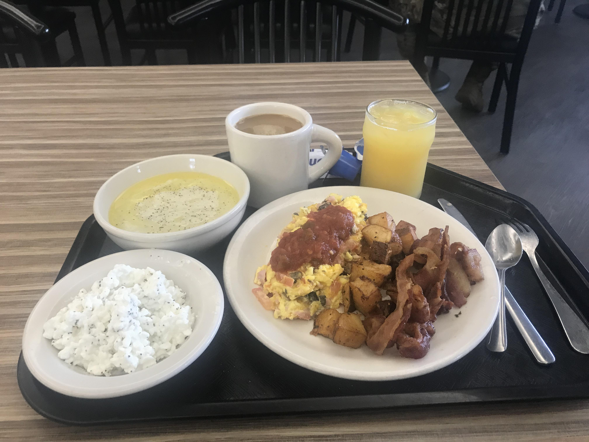
(미군 식당에서의 전형적인 아침식사입니다. 이 정도 품질에 3.7달러 정도면 굉장히 괜찮은 것입니다. 미국 민간 식당에 비해서도 당연히 더 좋은 가성비입니다. 근데 저 왼쪽의 허연 것은 뭔지 모르겠네요. 옥수수죽(homini grits)은 아닌 것 같은데요. 이 사진을 퍼온 quora의 댓글을 보니 '저건 거짓말이다, 내가 군대 있는 동안 저런 양질의 아침식사는 본 적이 없다'라는 말이 있던데, 제가 카투사로 있던 기지에서는 항상 언제나 저것보다 더 맛있는 음식을 먹었습니다. 일단 신선한 과일이 빠졌어요! 게다가 저렇게 정성없이 대충 만든 오믈렛이라니! 가만 보면 세계 곳곳의 미군 중에서도 주한미군이 전반적으로 잘 먹여주는 모양입니다.)
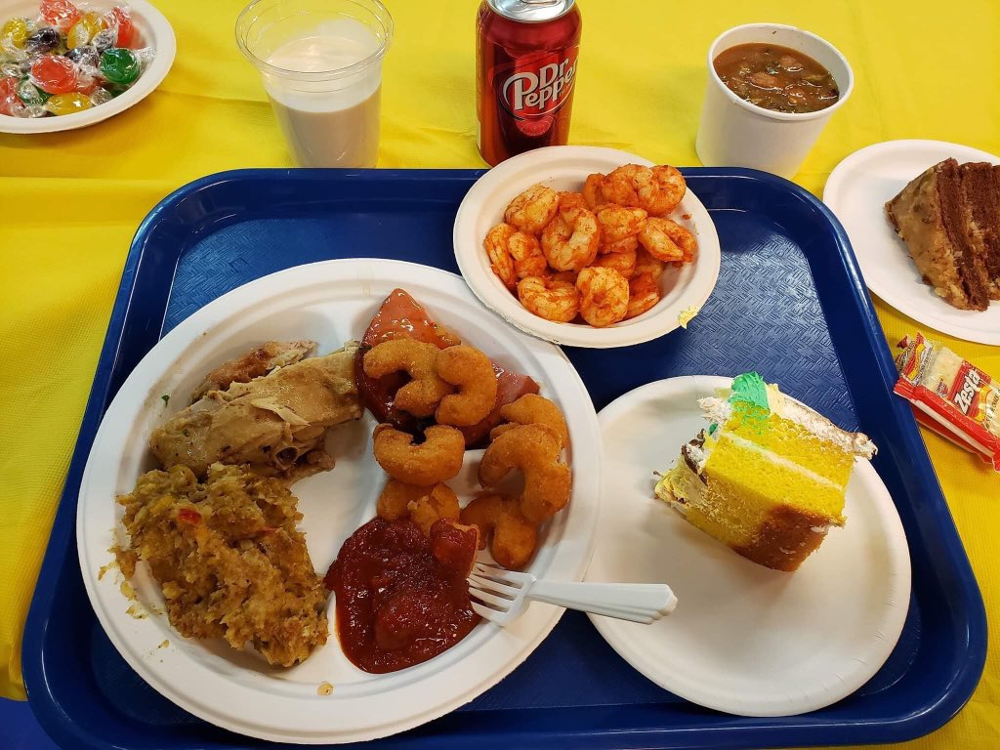
(이건 2019년에 올라온 아프간 주둔 미군 기지에서 추수감사절 특식이라고 올라온 사진인데, 이걸 보면 아프간 주둔 미군이 뭐 특별히 더 비싼 음식을 먹었던 것도 아닌 것이 확실합니다. 주한미군이 확실히 더 잘 먹네요.)
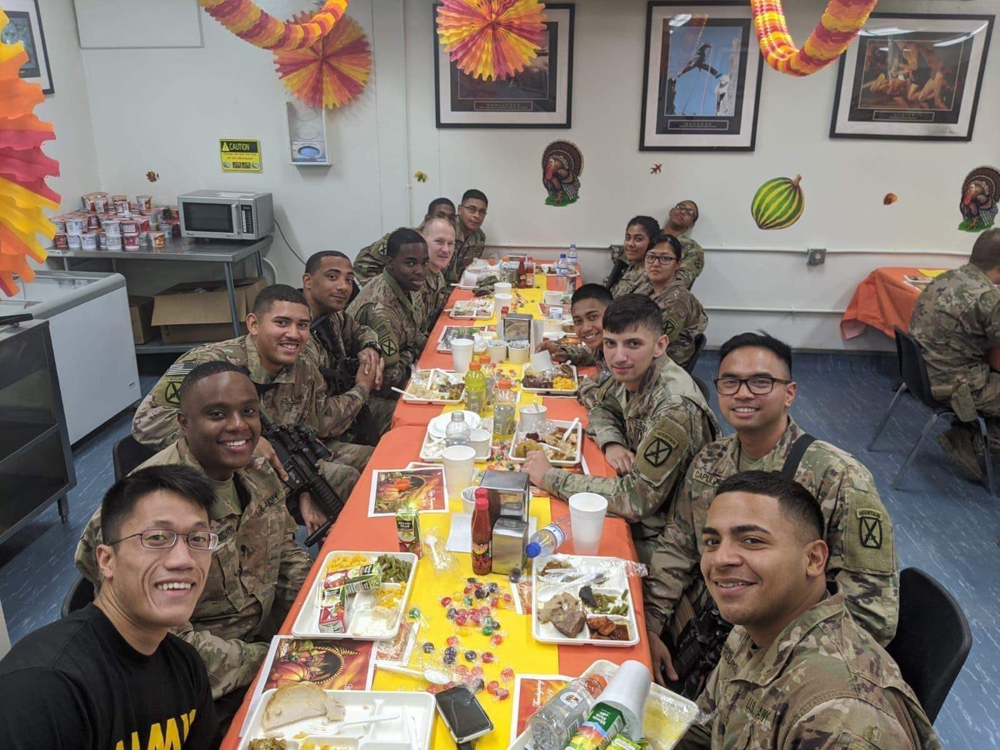
(이것도 2019년 아프간 주둔 미군 기지내의 식사 모습입니다. 1회용 플라스틱 식기를 쓰는 것도 그렇지만 음식도 주한미군의 정규 식당보다 확실히 질이 많이 떨어집니다.)
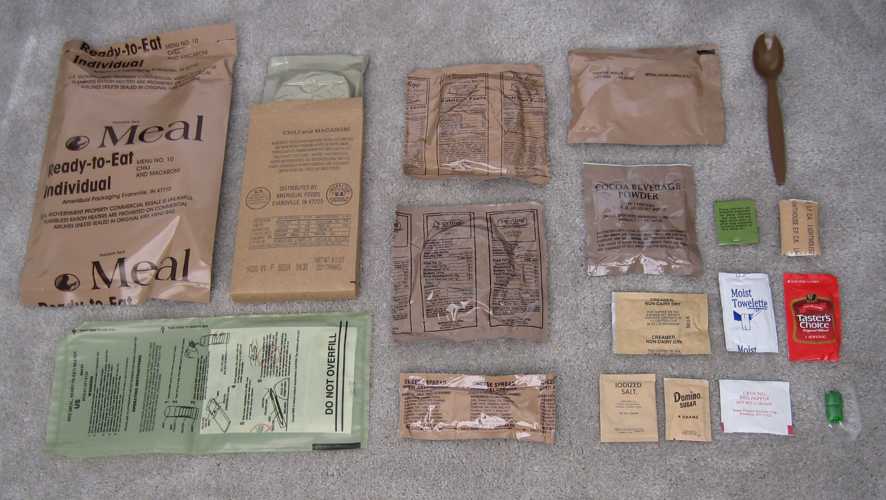
(MRE의 내용물입니다. MRE를 보고 맛있다고 말하는 사람은 아무도 없지만 그래도 먹을만 합니다. 특히 저는 저 속에 디저트로 가끔씩 발견되는 oatmeal cookie bar는 정말 맛있게 먹었습니다.)
수송비 때문에 밥이 이렇게 비싸게 먹힌다면, 밥보다 더 많이 소비되고 또 더 무거운 품목인 물은 어땠을까요? 현지에서 생산해서 일상적으로 소비하는 식수를 제외하고도, 아프간 주둔 미군에 공급된 PET병에 봉입된 식수는 6개월간 약 757만 리터입니다. 전선의 병사들에게는 주로 500ml 페트병으로 공급되었는데, 이 정도의 물을 공급하는데 든 비용은 대략 1병당 1.5~2달러 정도, 즉 대략 1700원에서 2300원 정도입니다. 거의 에비앙 수준의 가격입니다. 이 물은 알프스 기슭의 청정 지역이 아니라 그냥 주변 지역, 그러니까 카불 근처의 생수 공장 2곳은 물론, 우즈벡과 타지키스탄, 심지어 사막 국가인 아랍 에미리트의 생수 공장(바닷물을 제염처리...)에서 생산되고 포장된 것인데도 그랬습니다. 문제는 결국 수송비였던 것이지요. 가끔씩은 식수 공급 비용이 1병당 6달러까지 치솟을 때도 있었답니다. 그리고 그 중 상당 부분은 아프간 내의 부패와 상관이 많았답니다. 또 보안 비용도 있었습니다. 미군이 파키스탄 내부를 가로지르는 수천대의 트럭들을 지켜줄 수 없으니 현지 민간 보안 회사에 위탁을 하는데, 그 비용이 트럭 1대당 1,500~2,000 달러에 달했답니다.
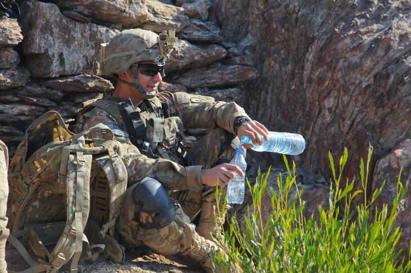
문제는 거기서 그치지 않습니다. 미군 특성상 사람이 마시는 물보다 헬리콥터와 장갑차가 태우는 연료가 훨~씬 더 많았습니다. 같은 기간에 미군은 위에서 언급한 식수량의 120배인 8억9천7백만 리터의 연료를 아프간으로 실어날랐습니다. 매일 2만4천 리터짜리 대형 유조차 207대가 실어날라야 하는 분량입니다. 저런 용량의 항공유와 디젤유 자체가 엄청나게 비쌌을텐데 그 수송비도 감당이 안 될 수준이었을 것입니다. 1842년 영국군, 정확하게는 영국의 동인도회사(East India Company) 군이 아프간을 철수할 때의 이유도 적어도 표면적으로는 '이길 수는 있지만 너무 비싸게 먹히는 전쟁'이라는 것이었습니다. 2021년 미군도 자신들이 탈레반에게 패배해서 떠난다고 하지는 않습니다. 표면적으로는 아프간 국민의 운명은 아프간 국민이 정해야 한다는 것이지만, 까놓고 보면 '너무 비싸게 먹히는 전쟁'이라는 것이 주요 원인일 것입니다. 처음에 그걸 모르고 쳐들어갔을까요? 19세기 초 영국도 21세기 초 미국도 자신들은 다르다, 이번에는 다르다 라고 생각하고 들어갔을 것입니다. 어디서 본 명언인데, 여기서도 통하는 이야기 같습니다. "아마추어들이 전술에 대해 떠들 때, 프로들은 보급로에 대해 이야기한다."
Source : https://www.pri.org/stories/2010-08-29/afghanistan-supplying-us-military-big-business
https://www.nam.ac.uk/explore/first-afghan-war
https://www.npr.org/2011/09/16/140510790/u-s-now-relies-on-alternate-afghan-supply-routes
https://en.wikipedia.org/wiki/Meal,_Ready-to-Eat
https://twitter.com/TheWTFNation/status/1200062027982671876?s=20